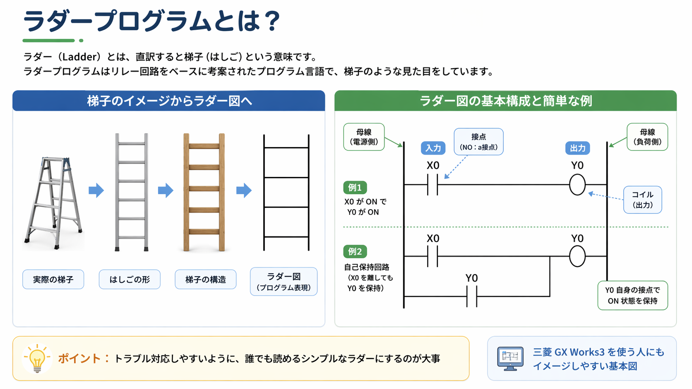
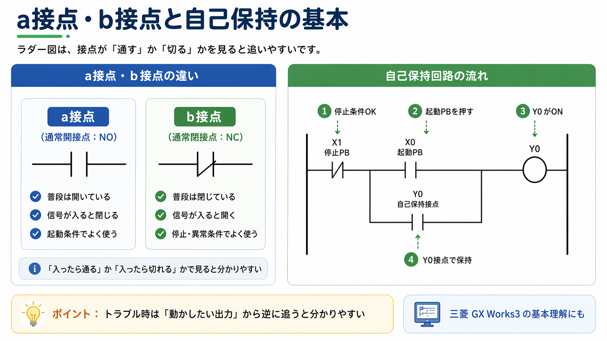

まずは「左から右へ流れを見る」と追いやすいです
ラダー図は、見た目が少し独特ですが、考え方はそこまで複雑ではありません。 基本は左側に条件、右側に結果があります。
たとえば、押しボタンが押された、センサが入った、停止条件が解除されている、といった条件が左側でそろうと、 右側にある出力コイルがONします。 この「条件が通ったら、右側が動く」という見方が基本です。
入力を見る
まずはどのスイッチ、センサ、信号が入ると回路が動くのかを見ます。
条件を見る
途中にある接点がON条件なのか、OFF条件なのかを確認します。
出力を見る
右側にあるコイルや出力で、何が動くのかを見ます。
流れで追う
1個ずつ部品を覚えるより、どの順で動くかを流れで見る方が追いやすいです。

補助説明を見る：ラダー図が苦手な人向けの見方
ラダー図は「はしご」っぽい見た目ですが、実際は横一段ごとに意味があると思うと見やすいです。
1段の中で、左から条件を見ていき、最後に右側のコイルや出力がONするかどうかを見る、という感じです。 まずは1段ずつ読むだけでもかなり理解しやすくなります。
a接点・b接点は「普段どうなっているか」で見ると分かりやすいです
ラダー図を見始めると、最初に出てきやすいのが a接点 と b接点 です。 ここはつまずきやすいですが、普段の状態で開いているか、閉じているかで考えると整理しやすいです。
| 種類 | 普段の状態 | 入力が入った時 | 見方のコツ |
|---|---|---|---|
| a接点 | 開いている | 閉じる | 条件が成立したら通るイメージです |
| b接点 | 閉じている | 開く | 条件が成立したら止める・切るイメージです |
a接点は「入ったら通る」
a接点は、通常時は開いていて、対象の信号がONすると通る接点です。 押しボタン、起動条件、運転許可などでよく出てきます。
b接点は「入ったら切れる」
b接点は、通常時は閉じていて、対象の信号がONすると切れる接点です。 停止条件、異常条件、インターロックなどでよく使います。
自己保持は「一度入ったら自分でつなぎ続ける」と考えると見やすいです
制御回路でよく出てくるのが自己保持です。 これは、スタート信号が一瞬でも入ったら、その後は自分の接点で回路をつなぎ続ける形です。
モータ運転、ポンプ運転、設備スタートなどでよく見ます。 ラダー図を読み慣れていない時でも、自己保持が分かるとかなり見やすくなります。

自己保持を読む時の流れ
- 停止条件が解除されているかを見る
- 起動ボタンが入ると出力がONする
- 出力がONすると、自分の接点でも通るようになる
- 起動ボタンを離しても、回路が保持される
- 停止ボタンや異常条件で切れると止まる
補助説明を見る：自己保持が苦手な人向け
自己保持は「起動ボタンを押しっぱなしにしなくても動き続けるための回路」と考えると分かりやすいです。
最初のきっかけは起動ボタンですが、その後は出力が自分で自分の回路をつなぐイメージです。
トラブル時は「動かない出力」から逆に追うと見やすいです
現場でラダー図を見る場面は、新規作成よりも「なんで動かないのか」「どこで止まっているのか」を確認する時が多いと思います。 そういう時は、最初から全部を読むより、動いてほしい出力から逆に追うと分かりやすいです。
例：モータが回らないなら、そのモータを動かす出力やリレーを見る。
どの接点が通っていないのかを確認する。
b接点で止まっていることも多いので、ここを見落とさない。
図面上だけでなく、押しボタン、センサ、ランプの実際の状態と合わせて見る。
「読みにくいラダー」より「追いやすいラダー」が大事です
制御は難しく見せようと思えばいくらでも難しくできますが、設備トラブル時に後から見た人が追えないと困ります。 現場では、凝った書き方よりも、誰が見ても流れが追いやすいことの方が大事です。
コメントが入っている、条件のまとまりが分かりやすい、自己保持や停止条件が見つけやすい、というだけでもかなり変わります。 この記事もその温度感で整理しています。
最初はこの4つを押さえるとかなり読みやすくなります
- 左から右へ見て、条件が通るかを追う
- a接点は入ったら通る、b接点は入ったら切れるで見る
- 入力 → 条件 → 出力の流れで読む
- トラブル時は出力から逆に追う
この4つだけでも、ラダー図の苦手意識はかなり減ります。 まずは1段ずつ落ち着いて追えるようになるだけで十分です。
ラダー図の読み方でよくある疑問
A. 最初から全部覚える必要はありません。まずは入力、接点、出力の流れが追えればかなり読みやすくなります。
A. 記号だけで覚えようとせず、「信号が入ったら通すのか、切るのか」で見ると整理しやすいです。
A. 動かしたい機器に関係する出力から見て、その手前の条件を逆に追うと分かりやすいです。
次に読むとつながりやすい記事
ラダー図の読み方が少し見えてきたら、次は「自己保持」「インターロック」「PLCとは何か」の順で広げると理解しやすいです。